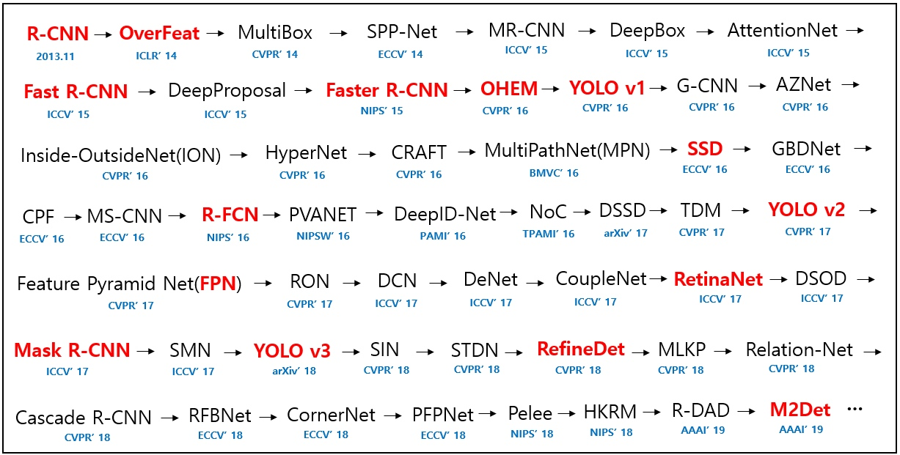

【目标检测】


two stage
1.R-CNN
Region-CNN,基本思路如下:
- 候选提取框：
selective search启发式搜寻可能存在物体的区域 - 对每个提取框提取特征
- 图像分类， 用SVM
- 非极大值抑制
one-stage
- yolo
- SSD
参考
https://zhuanlan.zhihu.com/p/40047760
yolo https://www.cnblogs.com/fydeblog/p/10447875.html
机器之心 https://www.jiqizhixin.com/articles/092301
github综述 https://github.com/hoya012/deep_learning_object_detection
深度学习-开源图片数据库
1. 图像
| 图像库 | 图片说明 | 链接 |
|---|---|---|
| ImageNet | 按照WordNet结构整理，平均每个类别下有500张图片 | http://www.image-net.org/ |
| CIFAR-10 | 6w张32x32的图片，分为10类(飞机，鸟，猫，船..) | http://www.cs.toronto.edu/~kriz/cifar.html |
| CIFAR-100 | 20大类，100小类 | |
| MNIST | 7w,28x28手写识别0-9 | http://yann.lecun.com/exdb/mnist/ |
| LFW | 1.3w 人脸数据, 无分类 | http://vis-www.cs.umass.edu/lfw/ |
| Caltech 101 | 101类objects, 300x200 | http://www.vision.caltech.edu/Image_Datasets/Caltech101/ |
| Caltech 256 | 256类objects, 300x200 | http://www.vision.caltech.edu/Image_Datasets/Caltech256/ |
服装类
| 图像库 | 图片说明 | 链接 |
|---|---|---|
| Fashion--MNIST | 服装类，类似手写识别风格，衣服鞋包 | https://github.com/zalandoresearch/fashion-mnist |
| DeepFashion | http://mmlab.ie.cuhk.edu.hk/projects/DeepFashion.html |
其他
| 图像库 | 图片说明 | 链接 |
|---|---|---|
| Quick Draw | google的涂鸦数据集, 345类, 5kw张 | https://quickdraw.withgoogle.com， https://github.com/googlecreativelab/quickdraw-dataset/data |
| kaggle casts vs. dogs | 2.5w | https://www.kaggle.com/c/dogs-vs-cats/data |
| COCO common objects Dataset | 微软, 物体检测,分割 | http://cocodataset.org/#home |
| Stanford 40 Actions | 斯坦福，人的40种动作(刷牙，扫地，爬山，做饭..) | http://vision.stanford.edu/Datasets/40actions.html |
人脸数据集
- 自然脸部检测（LFW）数据集：包含13000幅经裁剪的脸部区域图像（采用Viola-Jones检测框架），标记了图中人的姓名。数据集中的一部分人有两幅图像，人们常用它训练脸部匹配系统。
- UMD Faces：已标注的人脸图像数据集，包括来自8501个人的367920幅脸部图像。
- CASIA WebFace：包含453453幅人脸图像的数据集，经人脸检测后共识别出超过10575个身份。需要进行一些筛选来提高质量。
- MS-Celeb-1M：100万幅世界名人图像。需要进行一些筛选才能在深度神经网络上取得最佳结果。
- Olivetti：一些人的不同脸部图像。
- Multi-Pie：CMU的Multi-PIE人脸数据库
- Face-in-Action
- JACFEE：日本人和高加索人不同情绪的脸部表情
- FERET：脸部识别技术数据库
- mmifacedb：MMI脸部表情数据库
- IndianFaceDatabase 耶鲁人脸数据库和耶鲁人脸数据库B)。
2.文本数据集
- 20个新闻组数据集：分类任务，将出现的词映射至新闻组ID。文本分类的经典数据集之一，通常可以用于纯分类算法的基准测试，或者用于验证任意一种IR/索引算法。
- 路透社新闻数据集：（较老）纯分类用途的新闻电讯文本数据集。常用于教程。
- Penn Treebank：用于下一词预测或下一字预测。
- UCI垃圾邮件数据库Spambase：（较老）来自著名的UCI机器学习库的经典垃圾邮件数据集。该数据集经过细致的审编，因此可以作为个性化垃圾邮件筛选学习的基线。
- 广播新闻数据集：用于下一词预测的经典大型文本数据集。
- 文本分类数据集： 来自Zhang等人，2015；八个内容丰富的文本分类数据集，可用于新文本分类基线的基准测试。样例大小为120K至3.6M，问题所涉及的类别从两个到14个不等。数据集内容来自DBPedia、亚马逊、Yelp、雅虎和AG。
- WikiText：取自高质量维基百科文章的大型语言模型语料库，由Salesforce MetaMind进行审编。
- SQuAD：斯坦福问答数据集——用途广泛的问题回答及阅读理解数据集，每项问题的答案都是一段文本。
- 十亿词数据集：大型通用语言模型数据集，常用于训练Word2Vec等词的分布式表示。
- Common Crawl： 万兆字节级的网页爬取数据集——最常用于学习词向量。可通过亚马逊S3免费获取。数据集的内容从万维网爬取获得，因此也可以用作互联网的数据集。
- 谷歌图书Ngram数据集：取自谷歌图书的连续词数据，是探索一个词何时开始被广泛使用的简易方法。
- Yelp公开数据集：Yelp商户、评论及用户数据的子集，用于自然语言处理（NLP）。
参考资料
https://blog.csdn.net/chaipp0607/article/details/71403797
Copyright © 2015 Powered by MWeb, Theme used GitHub CSS.